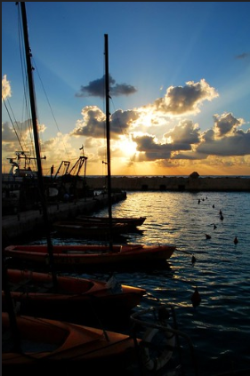
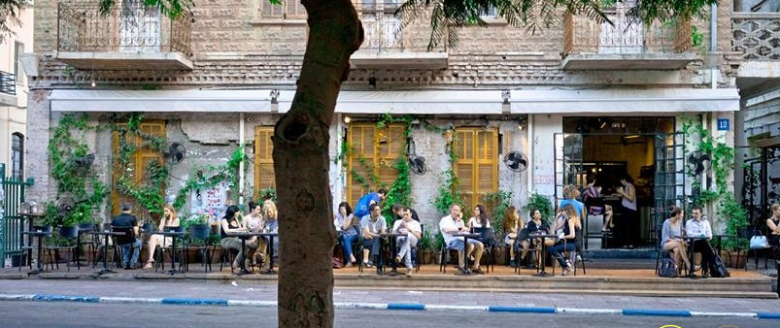

Jaffa (also known as Yafo) is the ancient port city out of which Tel Aviv has now grown. Jaffa has, in recent years, like much of South Tel Aviv, been regenerated with the old narrow streets and courtyards becoming another highly desirable part of Tel Aviv’s urban tapestry. Jaffa flea market is a well-known attraction of the area, with vendors selling a diverse range of interesting and unique products. Meanwhile, the narrow passageways and ancient buildings in the Old City of Jaffa are worlds away from modern Tel Aviv.
is a long one. As of the world’s oldest ports, Jaffa is thought to have been the port from which Jonah left in the story of the Whale! The port continued to be important . It was through Jaffa that they entered the country and in Jaffa that many initially settled. The huge population increase led to overcrowding, and tense relations developed between the Jewish and Arab residents of the city. The result was that Jews began building outside of Jaffa, firstly neighborhoods such as Neve Tzedek, and later the city of Tel Aviv. As Tel Aviv developed, Jaffa decayed. By the 1940’s Tel Aviv was so much larger than Jaffa, then dominantly Arab as most Jews had moved out, that it was made into a neighborhood of Tel Aviv to create the official title of the city of Tel Aviv-Yafo. The decay continued until the municipality created a Development Organization to oversee the restoration of Jaffa, which continues today. In late 2011, a new Old Jaffa Visitors Center opened to the public and this features multimedia displays depicting Jaffa through the ages, as well as self-guided walking tours of the city as it is today.
Tel Aviv Tours
Our Tel Aviv Tours are designed so you can get an inside look at specific aspects of this amazing city. From tours through the culinary secrets of the city’s markets or its vibrant nightlife, to tours of Tel Aviv’s famous Bauhaus architecture, street art, or fashion scene. We have created a range of fascinating Tel Aviv tours suitable for all ages, backgrounds, and interests. Aside from walking tours, our bike tours provide another perspective on the ‘White City’. We are also able to offer private tours of Tel Aviv with a guide, for those who prefer a more classical introduction to the city. Whichever tour you opt for, our team are here to advise from the initial selection, through to making sure your experience is extra special and full of great memories. 
Tel Aviv Architecture Tour
Our Tel Aviv Architecture Tour provides a great insight not only into the buildings and styles which dominate the city but also into the history of Tel Aviv. The White City of Tel Aviv is the highlight of Tel Aviv’s Architecture boasting the greatest collection of Bauhaus style buildings in the world, and recognized by UNESCO as a result, with over 4,500 amazing buildings. The city also has some beautiful eclectic style buildings, as well as modern buildings – ranging from skyscrapers to cultural complexes which sit peacefully in between. Learn about the many ways in which the city has changed over the years and the impact of the history on the future of Tel Aviv and its architecture. Offered with guaranteed departures every Monday and Thursday our Tel Aviv Architecture tour introduces the White City is a great way to learn more about the history, architecture, and culture of Tel Aviv.